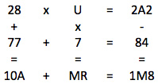

A cryptogram is given:
Restore the numerical values of the letters under which all of the equalities are valid, if different letters correspond to different digits. Arrange the letters in order of increasing numerical value and to find the required string of letters.
Observing the change in numbers under arithmetic operations, it is easy to see from the last line that W = 0. Next, you can sequentially determine the values of the other letters.
It is easy to see from the last line that W = 0. Then from the first column we find that I = 1. Then from the last column we find F = 2. So,

From the middle line it is clear that N $>$ E. From the first column we find E = 7. From the middle line, you can calculate the values of N and Z: N = 8 and Z = 4. We get:

Next, we sequentially calculate the values: A = 5, U = 9, M = 6, R = 3. Put the letters in order of increasing numerical value and we get the following string of letters: WIFRZAMENU
WIFRZAMENU